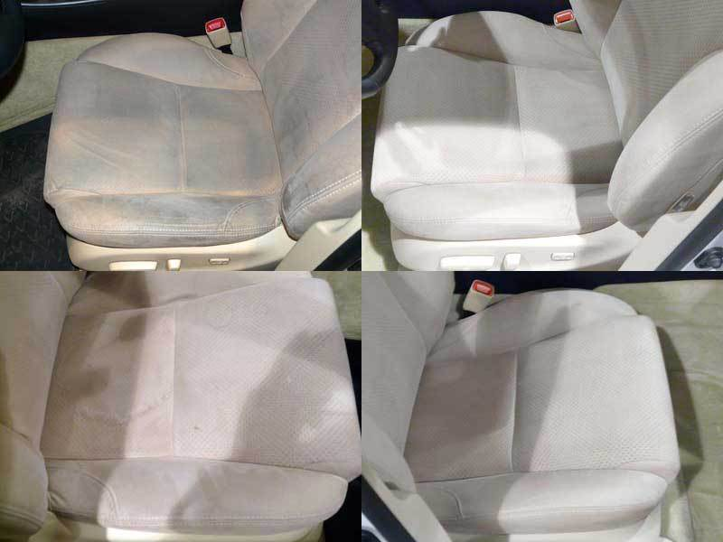
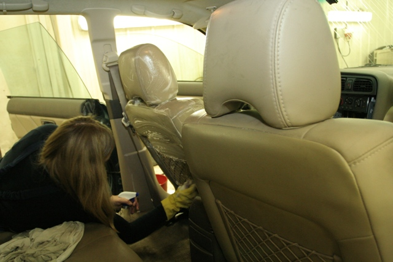
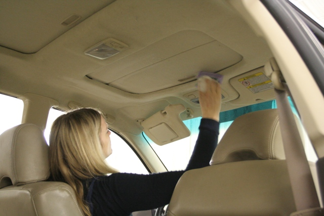
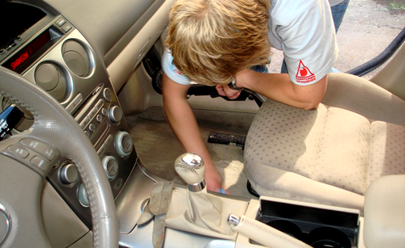

Химчистка салона автомобиля – процедура необходимая в нескольких случаях:
1. Поддержание чистоты и убранства салона автомобиля на должном уровне.
2. Неожиданное загрязнение салона, требующее срочной специальной очистки.
3. Предпродажная подготовка автомобиля.
Пятна на сидениях, дверях и даже потолке салона от разлитых продуктов питания и других загрязнителей способны испортить впечатление не только об автомобиле, но и его владельце. Основная цель химчистки – создание комфорта и уюта внутри автомобиля, приятного вида салона. Согласитесь, не очень приятно ездить в автомобиле с засаленной и потертой обивкой, в грязном и неопрятном салоне. После проведения химчистки салон преображается до неузнаваемости и автомобиль выглядит как новый.
Процесс химчистки салона включает в себя целый комплекс работ по тщательной обработке всех видов поверхностей внутри салона: обработку тканевых, пластиковых и кожаных поверхностей. Обработка обычно двухэтапная: сначала производится собственно химчистка салона, а затем наносятся специальные полироли и кондиционеры. Благодаря этому достигается тройной эффект:
Идеальная чистота и свежесть, включая аромат внутри салона.
Повышенная стойкость к различным загрязнителям.
Антистатические свойства.
В случае появления сильно загрязненных участков (пятен) используются специальные пятновыводители, которые подбираются в зависимости от характера загрязнения и его особенностей. При химчистке не обходят стороной и дверные петли, верхние части порогов, резиновые коврики.
Можно ли самостоятельно произвести химчистку салона? Да, на любительском уровне можно попробовать. Для этого даже существуют целые наборы средств. Обычно автовладелец начинает химчистку салона с обработки пылесосом. Но есть ли смысл покупать пылесос, если его можно взять напрокат в специализированных центрах и даже на некоторых заправках. Следующий вид обработки – аэрозоли для «сухой» химчистки салона. Для этого уже желательно иметь время и место. В этом случае качество химчистки салона зависит сразу от двух факторов – качества содержимого в баллончике и наличия навыков работы. И то, и другое может существенно отразиться на внешнем виде салона после химчистки и не всегда в лучшую сторону. Третий вид обработки – защита обивки от неблагоприятных факторов. Чаще всего такие составы увеличивают водоотталкивающие свойства ткани. Это способствует лучшей защите от впитывания пролившихся жидкостей за счет того, что жидкость собирается в капельки и ее нетрудно удалить с поверхности обивки. Но простой жизненный опыт подсказывает нам, что специалист сделает свою работу быстрее и качественнее обычного человека. Так стоит ли рисковать видом салона ради экономии копеек?
Чем дольше не чистился салон, тем тяжелее выводятся пятна. Даже при регулярной уборке отсутствие химчистки салона приводит к постепенному накоплению въевшейся грязи на обивке. Избавиться от нее пылесосом и обычными средствами не всегда удается. Накапливаются и усиливаются неприятные запахи, фактура ткани изменяется, цвет отличается от первоначального. Похожая картина наблюдается и в отношении кожи и пластика. Они тоже требуют регулярного ухода и защитного покрытия. Например, кожа со временем высыхает, дубеет, теряет внешний вид. Отсутствие защитной обработки кожи приводит к постепенному ее износу, появлению потертостей и даже трещин. Изменяется цвет и фактура кожи.
Химчистка в сложных случаях по длительности может достигать 10 часов, а потому растягиваться даже на 2 рабочих дня, что лишний раз доказывает сложность ее выполнения в домашних условиях. Зато эффекты от химчистки салона обычно превосходят все ожидания. В результате можно сделать простой и очевидный вывод: профессиональная химчистка салона – необходимый и весьма эффективный способ поддержания салона автомобиля на должном уровне красоты, уюта и комфорта.
Наномойка Антидождь Инновационный автошампунь Полировка «Жидкое стекло»